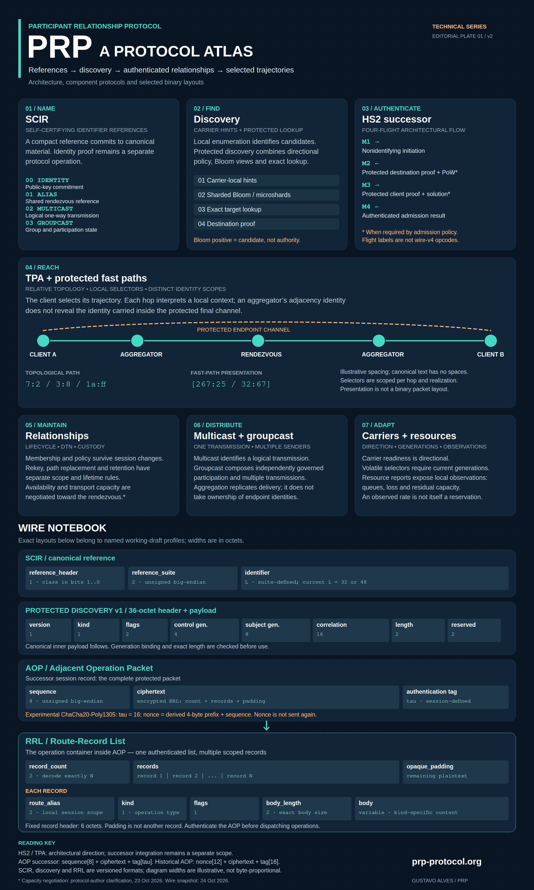

Technical reference · English poster · Version 2
PRP Protocol Atlas
A visual guide to PRP identities, discovery, HS2, topological paths, relationships, multicast, carriers and selected wire layouts. Includes the Relationship Record List (RRL) inside AOP.
Selected layouts distinguish the AOP successor from historical wire-v4. Architectural illustration; no implementation or security certification.
Open full-size scalable poster


English poster; PDF 420 × 700 mm, PNG 2100 × 3500, scalable SVG.

Poster description and file hashes (JSON) · Protocol comparison